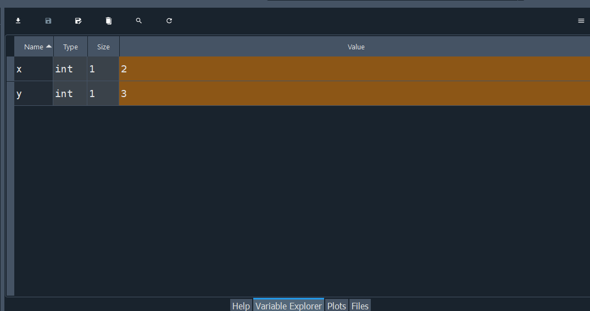

x = 2
y = 3
x + y5
In this chapter we will learn about variables and data types for single values. In Chapter 5 we will learn about data types that can contain multiple values.
In Python we can assign single values to variables and then work with and manipulate those variables.
Assigning a single value to a variable is very straightforward. We put the name we want to give to the variable on the left, then use the = symbol as the assignment operator, and put the value to the right of the =. The = operator binds a value (on the right-hand size of =) to a name (on the left-hand side of =).
To see this at work, let’s set x=2 and y=3 and calculate x+y:
x = 2
y = 3
x + y5In Spyder there is a “Variable Explorer” in the top-right pane to see the variables we have created:

We can see that x has a value 2 and y has a value 3.
When we assign x=2, in our code, the value is not fixed forever. We can assign a new value to x. For example, we can assign the number 6 to x instead:
x = 6
x + y9Finally, you cannot set x=2 with the command 2 = x. That will result in an error. The name must be on the left of = and the value must be on the right of =.
Variable names can be multiple letters long and can contain underscores (_). Underscores are useful because variable names cannot contain spaces and so we can use underscores to represent spaces. Variable names can contain numbers but they cannot start with one. For example x1 and x_1 are legal names in Python, but 1x is not. There are 35 keywords that are reserved and cannot be used as variable names because they are fundamental to the language. For example, we cannot assign a value to the name True, because that is a keyword. Below is the list of all keywords.1 We will learn what many of these keywords are later in this course and how to use them.
import keyword
print(keyword.kwlist)['False', 'None', 'True', 'and', 'as', 'assert', 'async', 'await', 'break', 'class', 'continue', 'def', 'del', 'elif', 'else', 'except', 'finally', 'for', 'from', 'global', 'if', 'import', 'in', 'is', 'lambda', 'nonlocal', 'not', 'or', 'pass', 'raise', 'return', 'try', 'while', 'with', 'yield']You may have noticed that the “Variable Explorer” in Spyder had a “Type” column. For x and y this was int which means “integer”. Integers are whole numbers that can also be negative. We can also check the type of a variable using the type() function:
type(x)intNumbers that are not whole numbers have the type float, which stands for floating-point number:
type(1.2345)floatAll the operations we learned about in Chapter 3 also work with floating-point numbers. For example:
1.2 * 33.5999999999999996You will notice that we don’t get 3.6 like we expected, but instead something very very close but slightly different to 3.6. This is because of how floating-point numbers are represented internally by the computer. The number is split into an integer with a fixed degree of precision and an exponential scaler. For example 1.2 is the same as 12\times 10e^{-1}, so the computer needs two integers: 12 and -1 (the exponent) to represent 1.2. Because this process involves some approximations when we perform arithmetic operations on them we can lose some accuracy. However, for most purposes 3.5999999999999996 is close enough to 3.6.
Python can also work with text in the form of strings. Text in Python needs to be wrapped in quotes. These can be either single quotes (') or double quotes ("), provided they match.
type('Hello world')strtype("This is a string")strThis str means it is a “string” which is a sequence of individual characters.
One thing to be careful with strings is that if you have a string that contains double quotes you have to wrap it in single quotes and vice versa:
quote = 'Descartes said "I think, therefore I am" in 1637'
apostrophe = "Don't wrap this with single quotes!"If you find yourself in the unusual situation with a string with both single and double quotes, you can wrap them in triple single quotes ('''):
quote_with_apostrophe = '''As they say, "Don't judge a book by its cover"'''Another thing to be careful with strings is that numbers surrounded by quotes are strings and not numbers:
type('1.2')strWe can use some of the operators for numbers on strings, but they do very different things. The + operator combines strings:
a = 'Hello, '
b = 'world'
a + b'Hello, world'And the * operator repeats strings:
a = 'Hello! '
a * 3'Hello! Hello! Hello! 'In programming it is often useful to work with variables that are either true or false. Therefore Python has a special data type for this called the Boolean data type. This is named after George Boole who was a mathematics professor in Ireland in the 1800s.
The Boolean values are either True or False. The words must be capitalized and spelled exactly this way. These are two of Python’s keywords.
a = True
b = False
type(a)boolTrue and False are 2 of the keywords that cannot assign values to. Try 2 = True yourself and see the error that you get.
Boolean values have their own operations: and, or and not. These are called logical operators. These work as follows:
a and b is True if both a and b are True. Otherwise it is False (if either or both of a or b are False). Here are all the possible combinations:a |
b |
a and b |
|---|---|---|
True |
True |
True |
True |
False |
False |
False |
True |
False |
False |
False |
False |
a or b is True if either a or b (or both) are True. Otherwise it is False (if both a and b are False). Here are all the possible combinations:a |
b |
a or b |
|---|---|---|
True |
True |
True |
True |
False |
True |
False |
True |
True |
False |
False |
False |
not a is True if a is False and is False if a is True. The not operator flips the value. Here are all the possible combinations:a |
not a |
|---|---|
True |
False |
False |
True |
Let’s try them out on two specific values a and b, where a is True and b is False:
a = True
b = False
a and bFalseThis is False because we need both a and b to be True.
a or bTrueThis is True because at least one of a or b is True.
not aFalseThis is False because a is True. It flips the value.
Python has operators to check if one number is equal to, not equal to, greater than (or equal to), or less than (or equal to) another number. It checks the (in)equality and returns True or False depending on the result.
To check if a=b, we use the == operator:
a = 3
b = 2
a == bFalsea\neq b, so we get False. Be careful to use two equal symbols and not one. If we did a = b, it would just reassign to a the value of b (2):
a = 3
b = 2
a = b
a2To check if a\neq b, we use the != operator (which is supposed to look like the \neq symbol):
a = 3
b = 2
a != bTrueThis is True, because a and b are not equal.
To see if a>b, we use > and to see if a\geq b we use a >= b:
a = 3
b = 2
a >= bTrueWe get True because a\geq b.
To see if a<b, we use < and to see if a\leq b we use a <= b:
a = 3
b = 2
a <= bFalseWe get False because a\ngeq b.
We can sometimes convert objects between int, float, str and bool. Sometimes this conversion is not so intuitive so you need to be careful and know how it works.
If we assign x=1, it will automatically be made an int:
x = 1
type(x)intBut we can convert x to a float using the float() function. Let’s assign y to be x as a float:
y = float(x)
type(y)floaty1.0We can see that y is not 1 but 1.0. The .0 helps us recognize that this is a float.
We can also convert the integer to a string:
z = str(x)
type(z)strz'1'The quotes around the 1 helps us recognize that this is a string.
Finally we can also convert from a float to a string:
str(y)'1.0'If you have an integer stored as a string, we can convert it back to an integer:
int('1')1Or you can convert it to a float:
float('1')1.0And if a float is stored as a string, we can convert it back to a float:
float('1.5')1.5However, it is not possible to convert '1.5' to an integer - that will return an error. Similarly you cannot convert strings with characters to integers or floats.
We can also convert floats to integers:
int(1.0)1If we try to convert a float that isn’t a whole number to an integer it will always take the closest integer to zero. For positive numbers this means it always rounds down:
int(1.1)1int(1.9)1And for negative numbers it always rounds up:
int(-2.1)-2int(-2.9)-2The Boolean values True and False can be converted to integers, floats and stringers. True becomes 1, 1.0 and 'True' and False becomes 0, 0.0 and 'False', respectively. We can also convert integers 1 and 0 back to Boolean:
bool(1)Truebool(0)FalseHowever, if we try convert strings to Boolean we get some unintuitive results. For example:
bool('0')Truebool('False')TrueNon-empty strings always return True. Only empty strings return False:
bool('')FalseThis is an example of when a programming language does something unintuitive. Therefore when writing a longer program you really need to be sure what each line is doing, otherwise your program will do something unexpected.
The keyword module contains functions for testing if a string is a keyword. The command keyword.kwlist returns the full list of keywords.↩︎